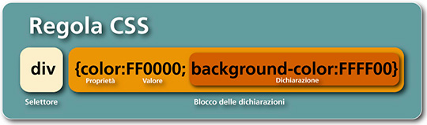
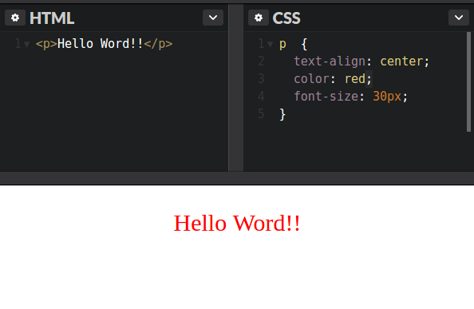

CSS
Cascading Style Sheets
COS'E` CSS?
I file css sono fogli di testo con estensione .css che
ci permettono di definire la formattazione di documenti HTML,
XHTML e XML ad esempio i siti web e relative pagine web in maniere ordinata.
VANTAGGI
-
Lo stesso foglio di stile diventa riutilizzabile in più contesti e
più volte
-
Basta cambiare i CSS e la nostra pagina web può essere visualizzata e
utilizzata correttamente su dispositivi diversi (es. PC, smartphone, tablet)
o addirittura su media diversi (es. video ecarta)
-
Si può dividere il lavoro fra chi gestisce il contenuto e chi
si occupa della parte grafica, facendo risultare il codice HTML
più ordinato

Le regole per comporre il CSS sono contenute in un insieme di direttive (Recommendations) emanate a partire dal 1996 dal W3C.

Come comporre il CSS

SELETTORI
-
I selettori selezionano l'elemento HTML in base al nome dell'elemento,
dell'attributo class o id ;
-
E' possibile selezionare elmenti secondo una certa logica e un certo criterio
(es: div > p seleziona tutti gli elementi p dentro div);
-
Allo stesso modo è possibile assegnare secondo determinate azioni
(es: p:hover selezione gli elemnti p sotto il puntatore).
PROPRIETA'
Le propietà sono un centinaio e ci permettono di modificare lo style cambiando i valori di ognuna.
Potrebbero cambiare nome per alcuni browser ma le più comuni vengono identificate con lo stesso
nome ovunque. Per informazioni visualizza questo sito.

COME INTEGRARE CSS
-
Con un foglio di stile esterno utilizzando dichiarando il file nell'head
all' interno del tag link;
-
Internamente al nostrio foglio HTMl, sempre nell'head ma sotto il tag style;
-
All'interno del tag del nostro elemento utilizzando l'attributo style
e settando le propietà che ci interessano.
VIEWPORT
E' possibile far adattare il nostro documento HTML in base al dispositivo che si
sta utilizzando. Digita prima SHIFT+CTRL+I e succesivamente SHIFT+CTRL+M. Cambiando
la risoluzione dello schermo gli elementi si adatteranno in base allo Spazio disponibile.
CONSIGLI
Il miglior modo per scrivere fogli css è utilizzare un buon editor ti testo
che ti faciliti il lavoro di stesura del codice, tra i più conosciuti troviamo
Sublime Text e Atom.
Un'innovazione in questo ambito sono i prepocessori CSS che
offrono una forma dichiarativa più completa e potente rispetto ai normali CSS.
I più famosi sono SASS e LESS.